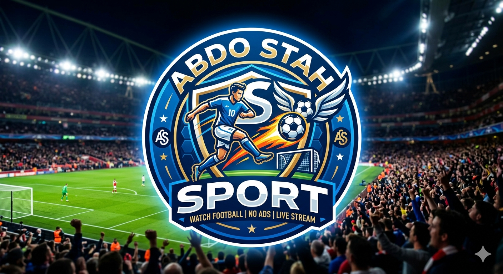

ABDO STAH-streams
Select a channel to start watching.
Note: beIN streams are updated frequently.
Live 1 ENG
Live 2 ENG
Live 3 (AR)
Live 4 (AR)
Live multi
Live (FAWA)
freesport site
Ready
Ad-blocking sandbox enabled. If a player doesn't load, try another source.